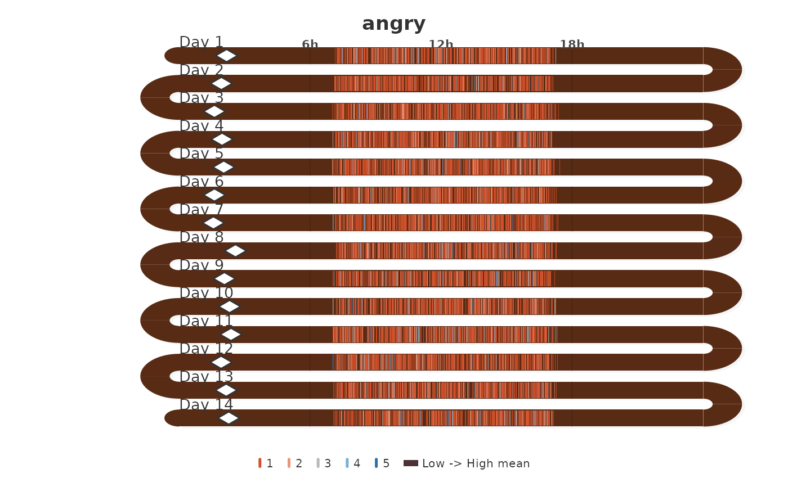
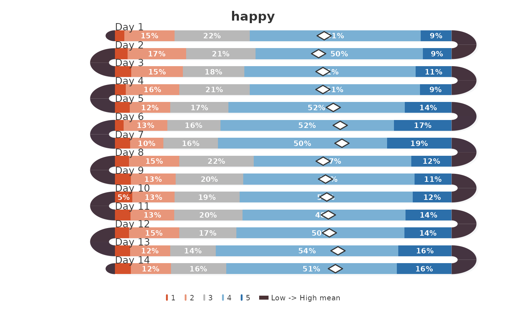

All 11 474 experience-sampling beeps from a 14-day study of 321
university students. Each row is one beep with the participant's emotion
ratings and a timestamp. Use with the var/day/timestamp
interface of survey_snake for daily snake plots.
Source
Neubauer, A. B., & Schmiedek, F. (2024). Approaching academic adjustment on multiple time scales. Zeitschrift fuer Erziehungswissenschaft, 27(1), 147–168. doi:10.1007/s11618-023-01182-8
Data: https://osf.io/bhq3p | Codebook: https://osf.io/csfwg | Code: https://osf.io/84kdr/files | License: CC-BY 4.0
Details
idCharacter. Anonymised participant identifier.
dayInteger 1–14. Study day.
start_timePOSIXct. Timestamp of the beep.
happyInteger 1–5. Self-reported happiness (rescaled from original 1–7).
angryInteger 1–5. Self-reported anger (rescaled from original 1–7).
Examples
# Anger over 14 days, ticks by time-of-day
survey_snake(ema_beeps, var = "angry", day = "day",
timestamp = "start_time")

# Happiness over 14 days, distribution bars
survey_snake(ema_beeps, var = "happy", day = "day",
tick_shape = "bar")
